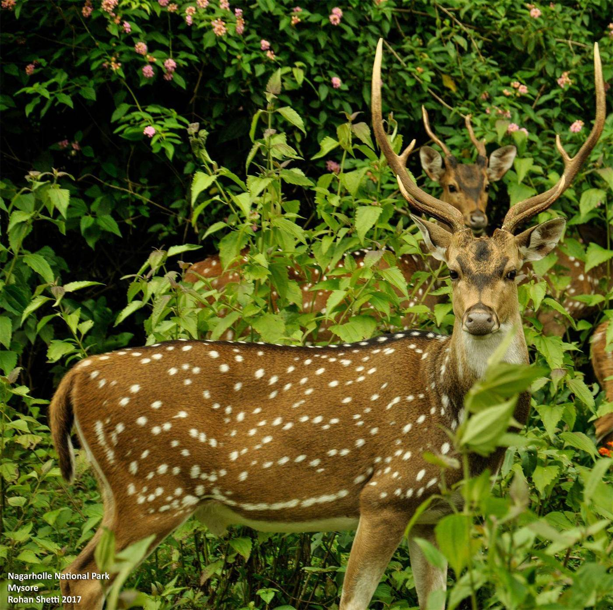
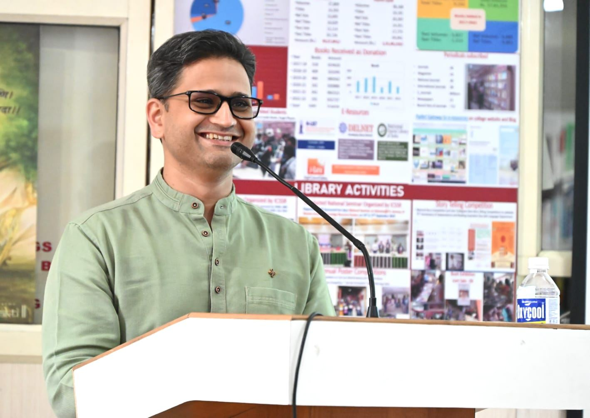
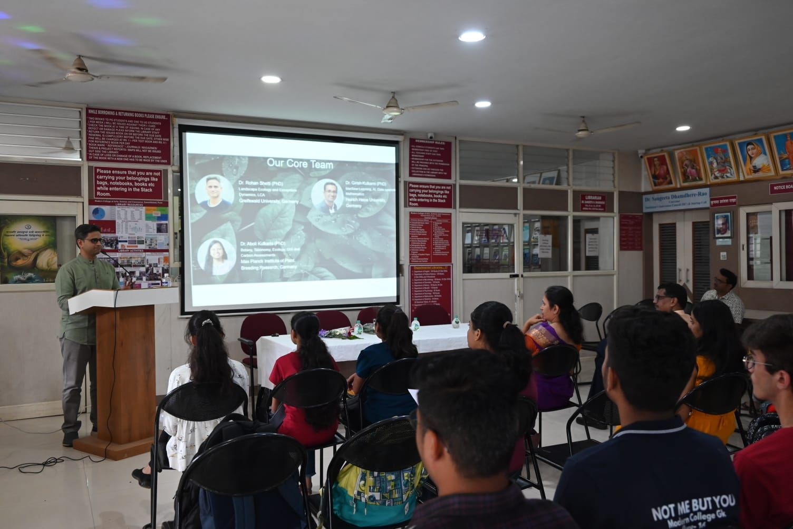
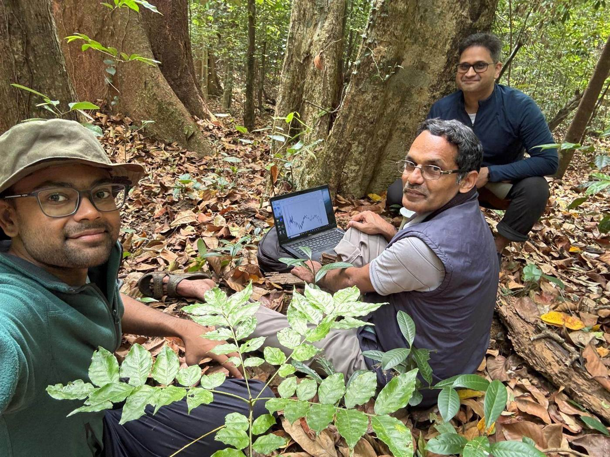

Join Our Research
This site enlists our microclimate research projects in the Western Ghats. Our pioneering effort to document and research the impact of microclimate in the forests is the first of its kind. We compare various ecological factors with a network of microclimate data from the length of Western Ghats.
Explore the fascinating world of microclimates in the Western Ghats. Discover how you can contribute to our research and be a part of groundbreaking ecological studies.
Host a probe
Own or manage forest, farm or grassland in the Western Ghats? Hosting a probe adds a valuable site to the network, and you get to see what your land's microclimate is doing.
Collaborate
Researchers and institutions can share sites, co-design studies, combine datasets, or use our microclimate data alongside their ecological surveys.
Students & interns
We welcome Master's and PhD students and interns interested in ecology, climate, GIS or data science, for field work, analysis or thesis projects.
Volunteer
Help with field logistics, photography, outreach, translation into regional languages, or web and design work.
Schools & outreach
Invite us for a talk, or bring microclimate science into the classroom. A probe in a school garden makes a great hands-on climate lesson.
Fund the research
Donate, adopt a probe or partner through CSR. Every contribution grows the network and opens up the data.
Ways to give →Help us read the forest's climate
Become a part of our mission to unravel the mysteries of microclimates. Your participation and support can help us better understand the intricate relationship between microclimate and the diverse ecosystems of the Western Ghats.



Sharing the science
We present our work at conferences in India and abroad, and talk to students and the public about microclimate and climate change.


